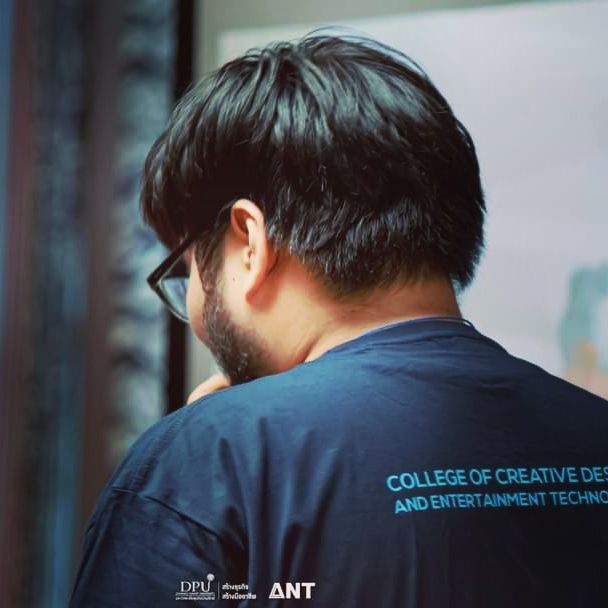

My Profile
Name: Nattapat Saipun NickName: Fluke
Date of birth: 25 Feb 2002 Age: 21
Nationality: Thai Religion: Buddhism
I'm interested Game Developer because In Childhood I have a very personal world. Then I find a many way to create my personal world such as Digital Painting,2D animation, 3D modeling, Music & Sound and Game Developer.So Game Developer is the best choies. It's most on point for create my world and I feel fun with it.